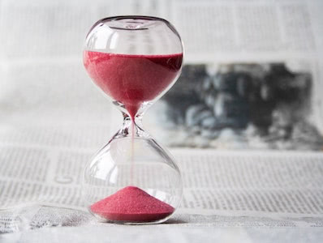

The Kitchen Timer!
An egg timer or kitchen timer is a device whose primary function is to assist in timing during cooking; the name comes from the first timers initially being used for the timing of cooking eggs. Early designs simply counted down for a specific period of time. Some modern designs can time more accurately by depending on water temperature rather than an absolute time.
Traditionally egg timers were small hourglasses and the name has come to be synonymous with this form. As technology progressed mechanical countdown timers were developed which had an adjustable dial and could be applied to a wide range of timed cooking tasks. Most recently digital timers have also been manufactured and a wide selection of software is available to perform this task on a computer or mobile phone. The task is simple to perform on most microwaves and oven timers.
Source: Wikipedia